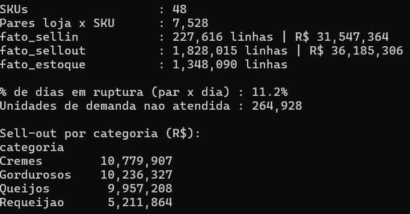
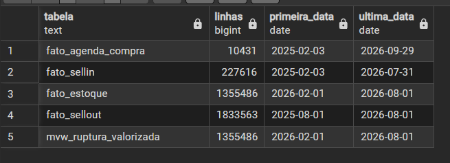
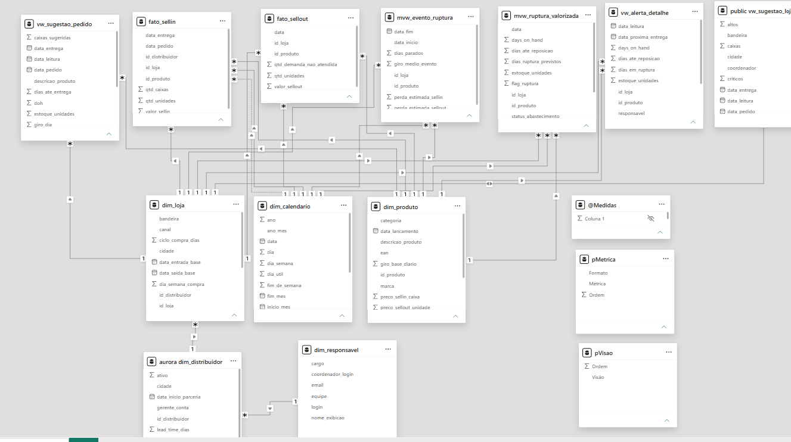
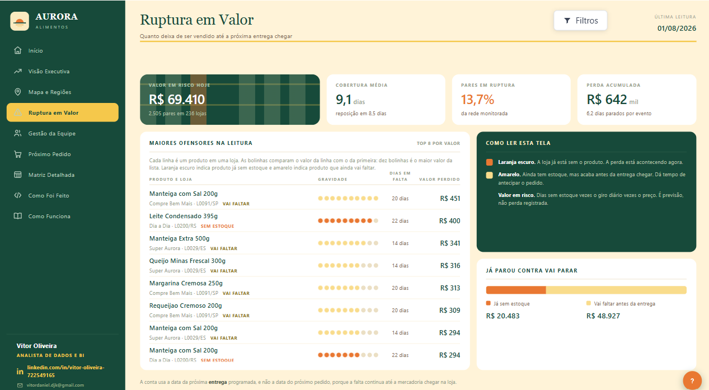
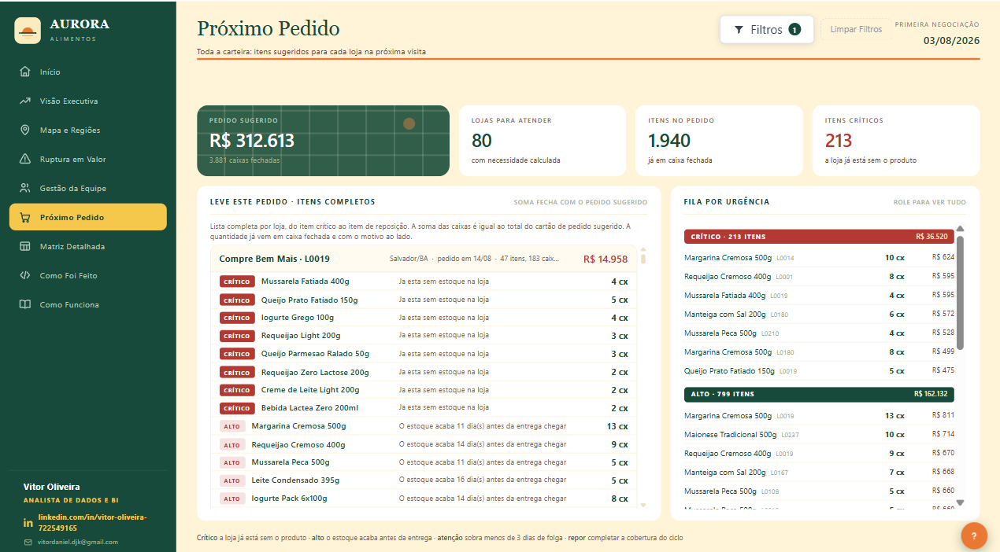
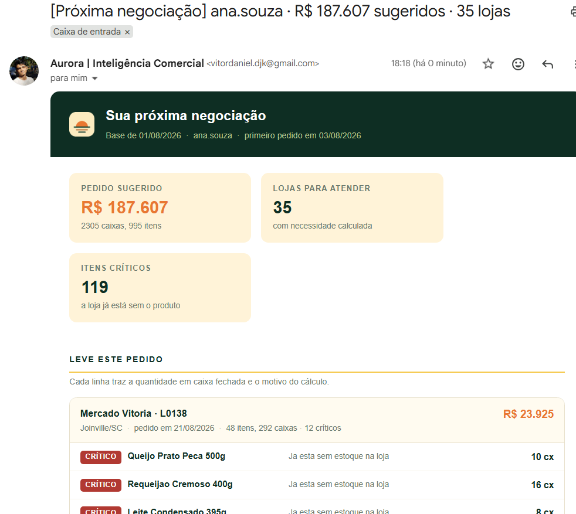
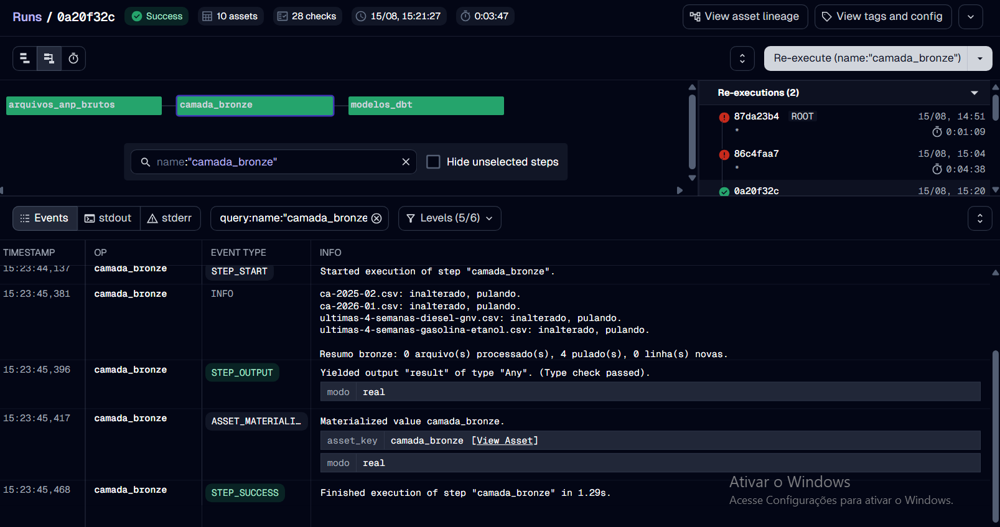
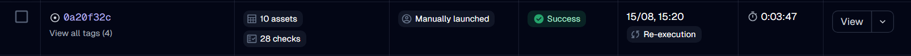
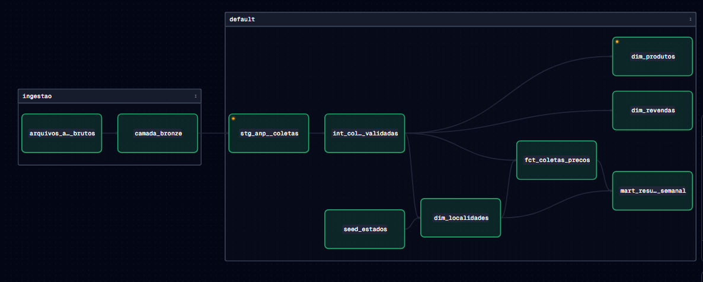
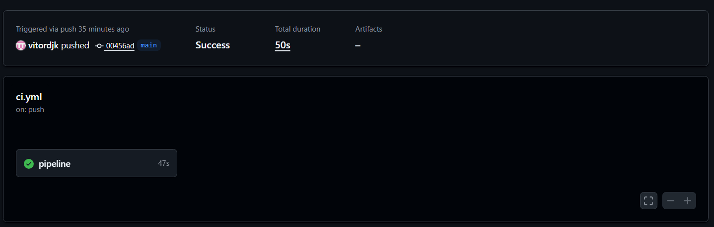

Experiência
| frente | o que fiz | resultado |
|---|---|---|
| Hub de dados | Warehouse em estrela com mais de 40 fontes (Scanntech, Nielsen, Mtrix, Neogrid, Involves) servido em Power BI com RLS dinâmico por estrutura comercial | fonte única de sell-in |
| Ruptura | Regressão da venda diária por cliente cruzada com estoque estima a data de ruptura e compara com o ciclo de compra | R$ 10 mi em risco |
| Distribuição | Power Automate consulta o hub, monta relatório em HTML por cargo e envia por e-mail e Teams; alertas de inconsistência para o BI | sem depender de abrir painel |
| Governança | Ferramenta em Python que pontua modelos de Power BI antes da publicação; hierarquia comercial sem duplicidade, com histórico mensal em SQL | relatório ruim não sobe |
| Preço | Price index, ponte PVM e elasticidade com trade e vendas | base do módulo RGM |
Aurora Alimentos
Indústria fictícia de laticínios. Da geração da base ao alerta por e-mail em quem decide. Todos os números saem de execução real do código.
Geração da base
Python · pandas · numpy
30 distribuidores, 250 lojas, 48 produtos, 18 meses: 3,4 milhões de linhas com semente fixa. A ruptura emerge do estoque dia a dia, em 11,2% dos pares loja e produto.

Banco e modelagem
PostgreSQL
Modelo estrela com fatos de venda e estoque, dimensões conformadas e visões materializadas para o painel.

Modelo semântico
Power BI · DAX
40 medidas de venda, estoque, cobertura e risco. Cobertura em dias ponderada pela demanda: 9,4 dias contra 15,2 pela média simples, diferença que inverte uma decisão de compra.

Telas
HTML · CSS
9 telas geradas a partir de um só arquivo de estilo.

Sugestão de pedidos
Python · DAX
Recomendação de compra por loja e produto a partir do risco de ruptura. Estimador validado contra a simulação: erro de 5,4% para menos.

Alertas por e-mail
Python · SMTP
Vendedor, gestor, diretor e reposição recebem versões diferentes do mesmo alerta, cada um com o que precisa decidir.

Radar de Preços de Combustíveis
Plataforma de dados sobre a série histórica de preços da ANP, do download semanal ao mart pronto para análise. Números de execução com os arquivos oficiais.
Ingestão idempotente
Python · Parquet · DuckDB
Comparação por hash: só o que mudou é reprocessado. O bronze guarda o arquivo como veio, com origem e data de ingestão em cada linha.

Transformação em camadas e testes
dbt · SQL
Três camadas com uma responsabilidade cada: tipar, deduplicar, modelar. 29 testes em todo build; erro bloqueia, aviso pede investigação. Na primeira execução real, um teste barrou um produto com a unidade grafada de dois jeitos.

Orquestração e linhagem
Dagster
Ingestão em Python e modelos do dbt como um grafo só, do download da ANP ao mart final. Agendamento semanal.

Integração contínua e documentação
GitHub Actions · GitHub Pages
A cada alteração, o GitHub roda o pipeline inteiro contra dados de exemplo versionados. Sem testes verdes, sem merge. Documentação do dbt publicada automaticamente.

Em desenvolvimento
Terceiro projeto, sobre a base da Aurora, em dois módulos.
Previsão de demanda
Previsão por produto e loja, validada por backtesting temporal, ligada à sugestão de compra já existente.
Preço, volume, mix e participação (RGM)
Ponte de receita em preço, volume e mix; elasticidade por produto; simulador de preço com participação de mercado; otimização com restrições do negócio.